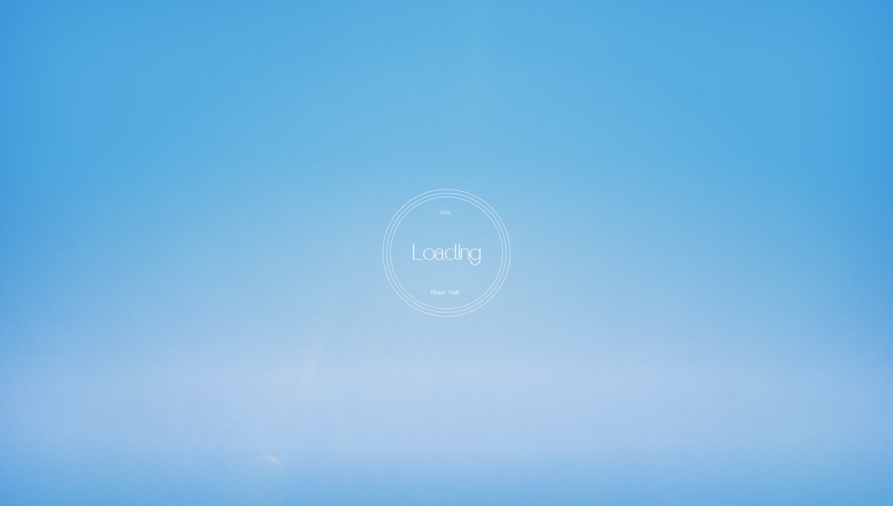

Загрузка мира…
⛵ Seascape — bigmap
W
/
↑
газ
S
/
↓
реверс / тормоз
A
/
←
влево
D
/
→
вправо
R
на старт
V
ракурс камеры (зафиксирована)
C
отладка: форма коллизий и зоны
X
вкл/выкл коллизии
Точки:
—
— стрелки у края экрана ведут к ним.
Пунктир из огоньков — маршрут (
way
).
скорость
0.0
kn
Рядом:
bigmap.glb
,
yacht.glb
,
preload.png
.